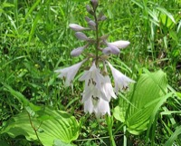

ウルイの生産量 都道府県ランキング
全8県の順位と、とれた量
ウルイが日本でいちばん多くとれるのは山形県です。70 tで、全国（130 t）の54%を占めます。

| 順位 | 都道府県 | 収穫量 | 全国に占める割合 |
|---|---|---|---|
| 1位 | 山形県 | 70 t | 54% |
| 2位 | 新潟県 | 38 t | 29% |
| 3位 | 福島県 | 12 t | 9.2% |
| 4位 | 島根県 | 4 t | 3.1% |
| 5位 | 岩手県 | 3 t | 2.3% |
| 6位 | 青森県 | 1 t | 0.8% |
| 7位 | 宮城県 | 1 t | 0.8% |
| 8位 | 岐阜県 | 1 t | 0.8% |
この数字について
- 分類：キジカクシ科
- 全国の収穫量：130 t
- この数字が表すもの：収穫量（畑や田でとれた重さ）
- 調査：地域特産野菜生産状況調査 令和6年産
- 8県分を調査（調査していない県は順位に入りません）
ウルイの生産量について、よくある質問
- ウルイの生産量が日本一の都道府県はどこですか？
- 山形県です。地域特産野菜生産状況調査（令和6年産）で70 tでした。
- ウルイの生産量ランキング2位・3位はどこですか？
- 2位は新潟県（38 t）、3位は福島県（12 t）です。
- ウルイの生産量ランキング4位・5位はどこですか？
- 4位は島根県（4 t）、5位は岩手県（3 t）です。ウルイの全8県の順位は上の表のとおりです。
- ウルイの全国の生産量はどれくらいですか？
- 130 t（令和6年産）です。